Assignment 2
Deep Learning on Large-Scale Data and Specialized Tasks
Deep Learning on Large-Scale Data for Specialized Computer Vision or Language Tasks
Course details
- Course name
- Deep Learning and Its Applications
- Instructor
- Lê Thành Sách
- Course code
- CO3133
- Semester
- 261
Group members
| Full name | Student ID | Main role / contribution | GitHub profile |
|---|---|---|---|
| Hoàng Xuân Bách | 2352082 | EDA, Ablation Study | bachkhmt |
| Nguyễn Việt Hùng | 2352424 | Modelling,Error Analysis | taro1026205 |
| Lê Nguyễn Gia Phúc | 2352931 | Method (SimpleCNN, Resnet18), Training, Reproducibility | shomin2155vn |
Problem statement
Food-11 recognition is a supervised image-classification task: given one food photograph, predict its single supplied category. The study asks whether ImageNet-pretrained visual features and backbone fine-tuning improve recognition over a compact network trained from scratch, and how those choices affect class-wise errors and computational cost. Macro-F1 is the primary metric because it gives equal weight to all 11 categories.
The task is defined by the following elements:
- Prediction unit: One RGB food photograph assigned to one broad category; there are no bounding boxes, segmentation masks, or ingredient-level labels.
-
Input: A float32 tensor
x ∈ ℝ3×256×256. The notebook resizes the longer image side to 256 pixels with bilinear interpolation, centers the image on a black square canvas, and applies ImageNet RGB normalization. -
Output: Eleven logits
zθ(x) ∈ ℝ11, one for each Food-11 category (Bread, Dairy product, Dessert, Egg, Fried food, Meat, Noodles-Pasta, Rice, Seafood, Soup, and Vegetable-Fruit). The predicted label is the highest-scoring class after softmax; these scores are not assumed to be calibrated probabilities. - Objective and primary metric: Training minimizes unweighted multiclass cross-entropy in FP32. Held-out performance is assessed primarily with test Macro-F1, alongside accuracy, per-class metrics, confusion matrices, and runtime measures.
- Main difficulties: Food appearance varies with preparation, viewpoint, lighting, scale, and background; some categories have overlapping visual cues, composite dishes have one broad label, and the source training counts are imbalanced (up to a 5.36:1 ratio).
The frozen-versus-full ResNet-18 comparison holds the architecture and ImageNet initialization fixed while changing whether the backbone is updated. Comparisons with SimpleCNN also change architecture and initialization, so they describe overall model differences rather than isolating a causal effect of pretraining alone.
Dataset description and EDA
Dataset description
Source, task and license
Original source and version. Food-11 was released by the Multimedia Signal Processing Group (MMSPG) at EPFL and introduced by Singla, Yuan and Ebrahimi (2016) in Food/Non-Food Image Classification and Food Categorization Using Pre-Trained GoogLeNet Model. This project uses the Kaggle mirror maintained by trolukovich;
Task and annotations. The task is supervised, single-label classification: given one RGB food photograph, predict one of 11 broad food categories. The prediction unit is one image. In the Kaggle distribution used here, labels come from class folders and are mapped to integer IDs 0–10. A mixed dish still receives one supplied category label. The group preserves the provided labels and split assignments. The experiments remove duplicate images before training and evaluation.
License and use. The EPFL conditions of use permit use, copying, modification and distribution of the dataset and its documentation for research purposes only and prohibit commercial distribution. This project uses Food-11 for academic coursework and research under those published conditions.
Format, counts and size
| Property | Value |
|---|---|
| Dataset version | Version 1 of the Kaggle distribution; original Food-11 release by EPFL |
| Total samples (original) | 16,643 (train 9,866; validation 3,430; evaluation/test 3,347) |
| Samples after deduplication | 15,980 (train 9,846; validation 3,364; evaluation/test 2,770) |
| Classes | 11 food categories; one integer label per image |
| Raw format | JPEG, RGB, uint8 in [0, 255] |
| Model input | float32 tensor, 3 × 256 × 256 after resize, padding and ImageNet normalization. A full batch of 128 input tensors occupies 96 MiB. |
| Size on disk | ≈ 1,133 MiB |
| License | EPFL provides the original release for research use. The report records a CC0 listing for the Kaggle mirror. |
Table 2 · Food-11 overview
Exploratory data analysis (EDA)
The EDA describes the original release before duplicate removal. The preliminary audit scans file integrity, native dimensions and metadata across all three splits. The report computes pixel statistics on original training images after resizing the longer side to 256 px, with padding excluded. Table 6 compares those statistics with the ImageNet constants used for normalization.
Data integrity
All 16,643 files decode as RGB JPEGs; no file is empty, unreadable or inconsistent with its extension. The same 11 class folders appear in all three official splits.
Class distribution before deduplication
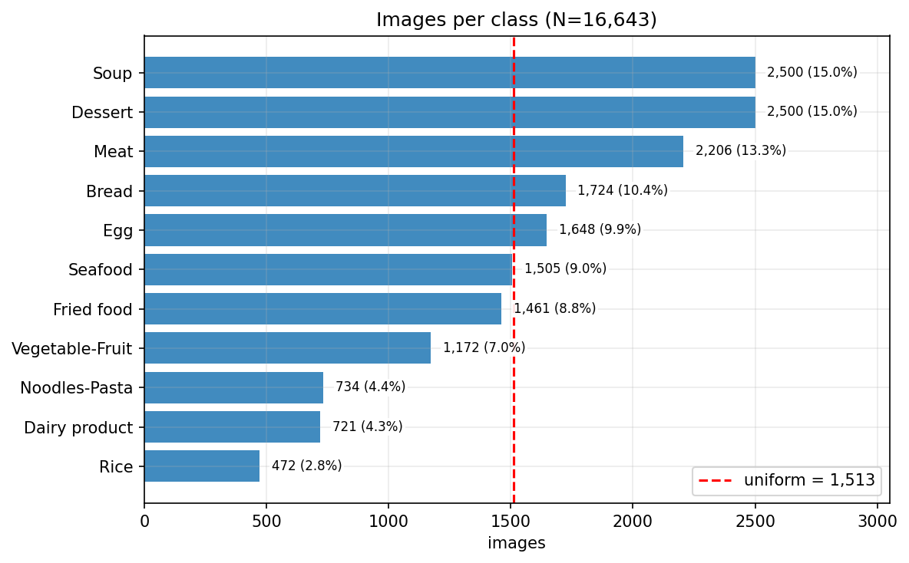
On the original splits, always predicting Dessert gives 14.58% validation accuracy and 2.31% validation Macro-F1. It gives 14.94% accuracy on the original evaluation split. Macro-F1 gives each class equal weight.
Class Distribution across splits before deduplication
| Training | Validation | Evaluation | ||||||
|---|---|---|---|---|---|---|---|---|
| Idx | Class | Images | % | Images | % | Images | % | Total |
| 0 | Bread | 994 | 10.08 | 362 | 10.55 | 368 | 10.99 | 1,724 |
| 1 | Dairy product | 429 | 4.35 | 144 | 4.20 | 148 | 4.42 | 721 |
| 2 | Dessert | 1,500 | 15.20 | 500 | 14.58 | 500 | 14.94 | 2,500 |
| 3 | Egg | 986 | 9.99 | 327 | 9.53 | 335 | 10.01 | 1,648 |
| 4 | Fried food | 848 | 8.60 | 326 | 9.50 | 287 | 8.57 | 1,461 |
| 5 | Meat | 1,325 | 13.43 | 449 | 13.09 | 432 | 12.91 | 2,206 |
| 6 | Noodles/Pasta | 440 | 4.46 | 147 | 4.29 | 147 | 4.39 | 734 |
| 7 | Rice | 280 | 2.84 | 96 | 2.80 | 96 | 2.87 | 472 |
| 8 | Seafood | 855 | 8.67 | 347 | 10.12 | 303 | 9.05 | 1,505 |
| 9 | Soup | 1,500 | 15.20 | 500 | 14.58 | 500 | 14.94 | 2,500 |
| 10 | Vegetable/Fruit | 709 | 7.19 | 232 | 6.76 | 231 | 6.90 | 1,172 |
| Total | 9,866 | 100 | 3,430 | 100 | 3,347 | 100 | 16,643 | |
Table 3 · Official sample counts by class and split
Input size
| Rank | Resolution (pixels) | Images | Share (%) |
|---|---|---|---|
| 1 | 512 × 512 | 5,551 | 56.26 |
| 2 | 512 × 384 | 1,355 | 13.73 |
| 3 | 384 × 512 | 519 | 5.26 |
| 4 | 382 × 512 | 320 | 3.24 |
| 5 | 512 × 382 | 216 | 2.19 |
| 6 | 512 × 341 | 142 | 1.44 |
| 7 | 1024 × 768 | 108 | 1.09 |
| 8 | 512 × 306 | 107 | 1.08 |
| 9 | 512 × 289 | 81 | 0.82 |
| 10 | 511 × 512 | 60 | 0.61 |
| Other | 1,407 | 14.26 | |
| Total | 9,866 | 100.00 |
Table 4 · Ten most common resolutions in the original training split.
| Dimensions above 512 pixels | Images | Share (%) |
|---|---|---|
| Neither dimension | 9,319 | 94.46 |
| Exactly one dimension | 120 | 1.22 |
| Both dimensions | 427 | 4.33 |
| Total | 9,866 | 100.00 |
Table 5 · Original training images by number of dimensions above 512 pixels. Shares are rounded independently.
We chose a common input size of 256 × 256 to balance spatial detail and compute cost across models and repeated runs. For the dominant 512 × 512 group, this halves each dimension and reduces the input pixel count from 262,144 to 65,536 (75% fewer pixels). The preprocessing rule was fixed before training using the original training images and applied to all partitions.
Pixel intensity
Table 6 reports descriptive training-set RGB statistics, computed after a 256 px resize with padding excluded, and the fixed ImageNet constants used for normalization. Food-11 is warmer and has a wider pixel spread than the ImageNet reference. Figure 2 shows the channel distributions.
| Channel | Train mean | Train std | ImageNet mean | ImageNet std |
|---|---|---|---|---|
| R | 0.5586 | 0.2722 | 0.485 | 0.229 |
| G | 0.4520 | 0.2755 | 0.456 | 0.224 |
| B | 0.3434 | 0.2821 | 0.406 | 0.225 |
Table 6 · Training-set RGB statistics and ImageNet reference
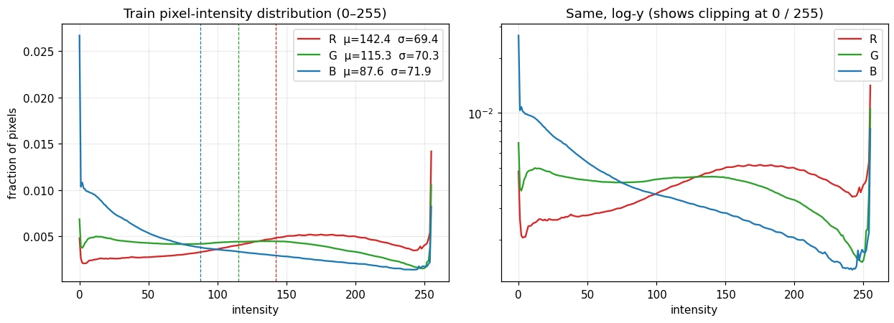
Duplicates and split leakage
Exact duplicates have identical file bytes. Table 7 summarizes exact MD5 matches and pHash candidate pairs within and across the original splits. Table 8 shows the class counts after duplicate removal.
| Split pair | MD5 duplicate pairs | pHash candidate pairs |
|---|---|---|
| train–val | 51 | 51 |
| train–test | 249 | 46 |
| val–test | 311 | 14 |
| train–train | 5 | 69 |
| val–val | 3 | 7 |
| test–test | 5 | 9 |
| Total | 624 | 196 |
Table 7 · Duplicate audit within and across the official splits. MD5 counts represent exact-duplicate pairs. pHash candidates have different MD5 hashes and a Hamming distance of at most 10. Counts refer to image pairs, not unique images.
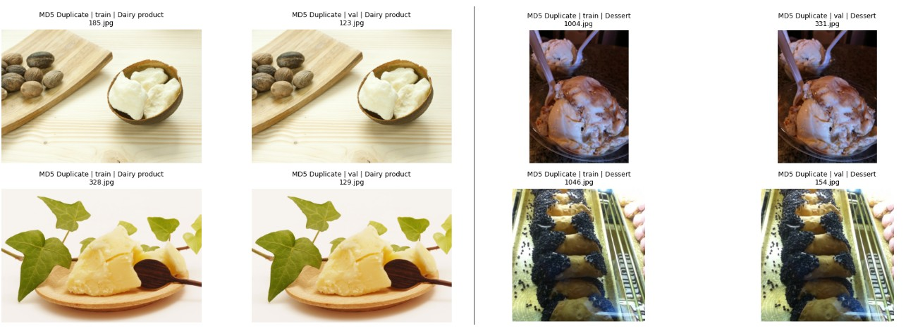
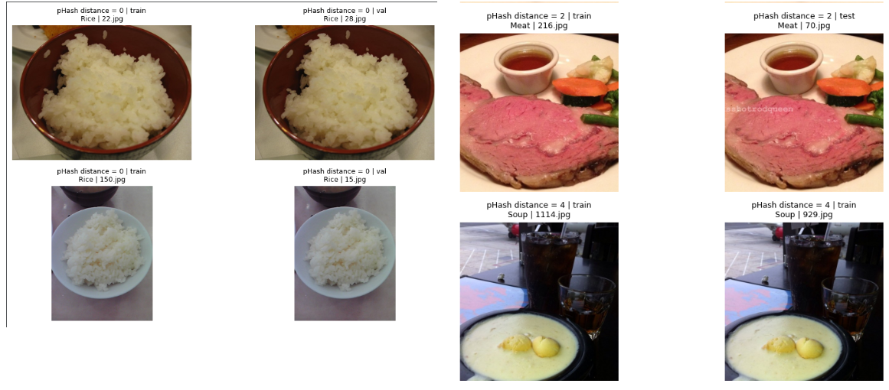
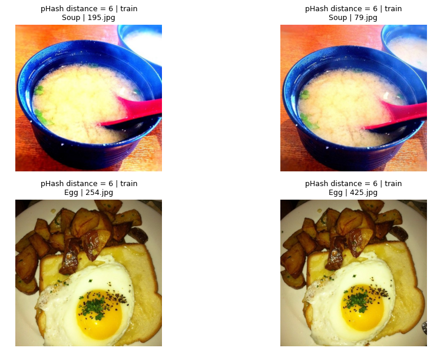
Images were treated as duplicates when they shared the same MD5 hash or as near-duplicates when their pHash Hamming distance was at most 5. Both checks used the same removal logic: an image was removed only if a matching representative had already been retained. MD5 deduplication was performed first, followed by pHash deduplication. Each stage processed duplicates within partitions before removing duplicates across partitions, with retention priority given to training, then validation, and finally evaluation. Within each partition, the first eligible image in the existing order was retained. Two additional redundant images were removed after manual inspection, while their counterparts were retained. Label consistency was also checked to distinguish repeated images from identical images assigned to different categories, All images removed during deduplication shared the same class label as their retained counterparts. The resulting class distribution is shown in Table 8.
| Idx | Class | Training | Validation | Evaluation | Total | |||
|---|---|---|---|---|---|---|---|---|
| Images | % | Images | % | Images | % | |||
| 0 | Bread | 993 | 10.09 | 362 | 10.76 | 268 | 9.68 | 1,623 |
| 1 | Dairy product | 423 | 4.30 | 141 | 4.19 | 147 | 5.31 | 711 |
| 2 | Dessert | 1,499 | 15.22 | 450 | 13.38 | 440 | 15.88 | 2,389 |
| 3 | Egg | 982 | 9.97 | 327 | 9.72 | 329 | 11.88 | 1,638 |
| 4 | Fried food | 848 | 8.61 | 326 | 9.69 | 221 | 7.98 | 1,395 |
| 5 | Meat | 1,325 | 13.46 | 449 | 13.35 | 321 | 11.59 | 2,095 |
| 6 | Noodles/Pasta | 438 | 4.45 | 147 | 4.37 | 147 | 5.31 | 732 |
| 7 | Rice | 279 | 2.83 | 88 | 2.62 | 90 | 3.25 | 457 |
| 8 | Seafood | 855 | 8.68 | 347 | 10.32 | 203 | 7.33 | 1,405 |
| 9 | Soup | 1,497 | 15.20 | 500 | 14.86 | 384 | 13.86 | 2,381 |
| 10 | Vegetable/Fruit | 707 | 7.18 | 227 | 6.75 | 220 | 7.94 | 1,154 |
| Total | 9,846 | 100 | 3,364 | 100 | 2,770 | 100 | 15,980 | |
Table 8 · Class distribution after duplicate removal. Each percentage is calculated relative to the number of retained images in its split.
Sample inspection
The samples in Figure 6 show broad within-class variety, composite dishes assigned one class label, examples that appear off-topic and visually similar classes such as Noodles/Pasta/Soup and Meat/Egg/Fried food. These qualitative observations motivate hypotheses for later error analysis.
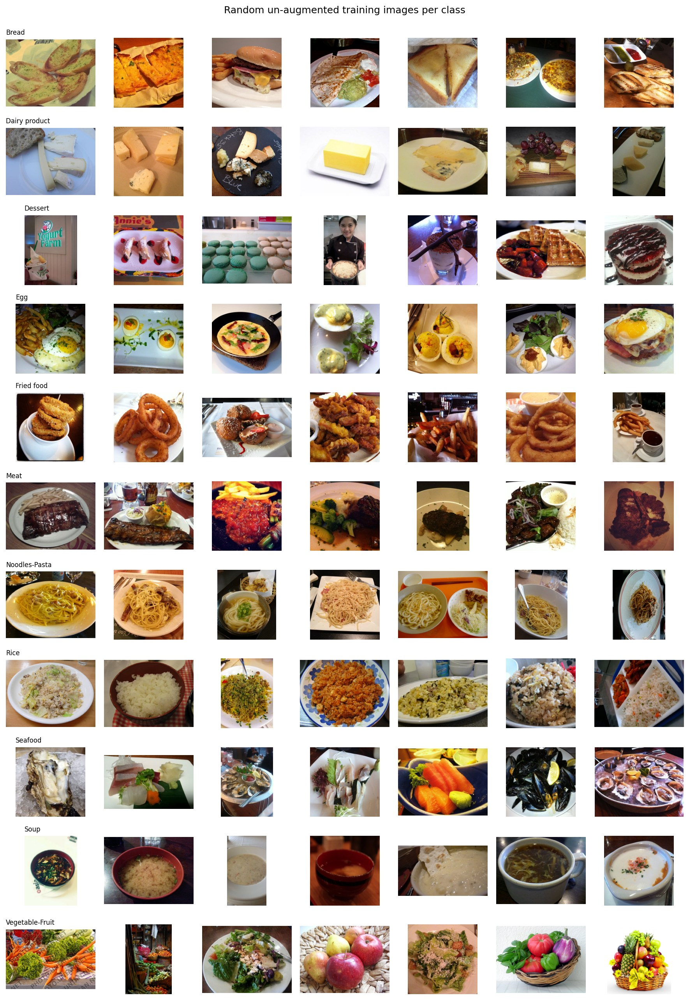
Data splitting
| Item | Protocol |
|---|---|
| Split | The predefined Food-11 training, validation, and evaluation partitions are used without random re-splitting. After deduplication, they contain 9,846, 3,364, and 2,770 images, respectively. Retained images remain in their original partitions. |
| Seeds | No split seed is used. Training seeds 42, 43, and 44 are assigned to Python, NumPy, and PyTorch CPU and CUDA random-number generators before model initialization and training. They control stochastic operations such as initialization, shuffling, augmentation, and dropout. The cleaned partitions remain fixed. |
| Stratification | No additional stratified splitting is performed. Class counts and proportions are examined separately for each partition to assess imbalance and differences in class distribution. |
| Split unit | One image file. The dataset provides no subject, restaurant, plate, or scene identifiers for grouped splitting. Image-similarity checks are used to identify duplicates within and across partitions. |
| Leakage control | MD5 exact-duplicate removal is followed by pHash near-duplicate removal using a Hamming distance of at most 5. Each stage processes duplicates within partitions before removing duplicates across partitions, with retention priority given to training, then validation, and finally evaluation. An image is removed only when a matching representative has already been retained. Two additional redundant images are removed after manual inspection. |
| Subset selection rules | All 11 classes and all 15,980 images retained after deduplication are used. No additional class exclusion or sample subsampling is applied. |
Table 9 · Data-splitting protocol for the cleaned Food-11 dataset. The same retained partitions are used across all model configurations, training seeds, and augmentation conditions.
Dataset bias and limitations
- Class imbalance. The largest classes in the original training split have about 5.36 times as many images as Rice. This motivates using Macro-F1 as the primary metric.
- Broad and overlapping categories. Dishes within a class can look different, while dishes from different classes may share colors, textures, or preparation styles. A mixed plate can contain several types of food and still carry a single label.
- Annotation ambiguity. Some sampled images contain distracting background subjects or off-topic content, such as a shop sign labeled Dessert. These examples suggest possible label noise, whose frequency across the dataset was not measured.
- Photo-style bias. Some Dairy product and Vegetable/Fruit images use studio backgrounds, while other classes include restaurant photos. Models may use these background cues alongside the appearance of the food.
- Duplicates and grouping metadata. Duplicate images require cleaning within and across the predefined splits. The dataset provides food-class labels but lacks subject, restaurant, plate, and scene identifiers for grouped splitting.
Data preprocessing
Data cleaning and annotation handling
All 16,643 original image files were successfully decoded as RGB JPEGs, with no empty or unreadable files. Exact duplicates, near-duplicates, and two manually identified redundant images were removed as described in the leakage-control protocol. Class labels are inherited from the dataset folders. Potentially ambiguous annotations are discussed as dataset limitations rather than automatically relabeled.
Resizing and padding
Each image is converted to RGB and resized using bilinear interpolation so that its longer side becomes 256 pixels while preserving its aspect ratio. The resized image is centered on a black 256 × 256 canvas, with padding divided as evenly as possible between opposite sides. This produces a uniform input size without cropping image content or distorting its proportions.
Normalization
Pixel values are converted to floating-point values on the [0, 1] scale and normalized independently for each RGB channel using the fixed ImageNet mean (0.485, 0.456, 0.406) and standard deviation (0.229, 0.224, 0.225). These constants match the normalization expected by the pretrained ResNet-18 weights. The same normalization is applied to SimpleCNN to keep input preprocessing consistent across configurations.
Data augmentation
Training images undergo random horizontal flipping with probability 0.5 after resizing and padding. No rotation or random cropping is applied. Horizontal flipping is disabled in the augmentation ablation. Validation and evaluation images use the same resizing, padding, and normalization steps without random augmentation.
Input tensor shapes
Each preprocessed image is represented as a float32 tensor of shape [3, 256, 256], corresponding to the RGB channels, height, and width. Each class label is an integer from 0 to 10.
Example batch after preprocessing
Training, validation, and evaluation use a batch size of 128. Training samples are shuffled, while validation and evaluation samples retain their order. A full batch has the shapes and data types below. The final batch may contain fewer images because incomplete batches are retained.
images: shape [128, 3, 256, 256], dtype torch.float32 labels: shape [128], dtype torch.int64
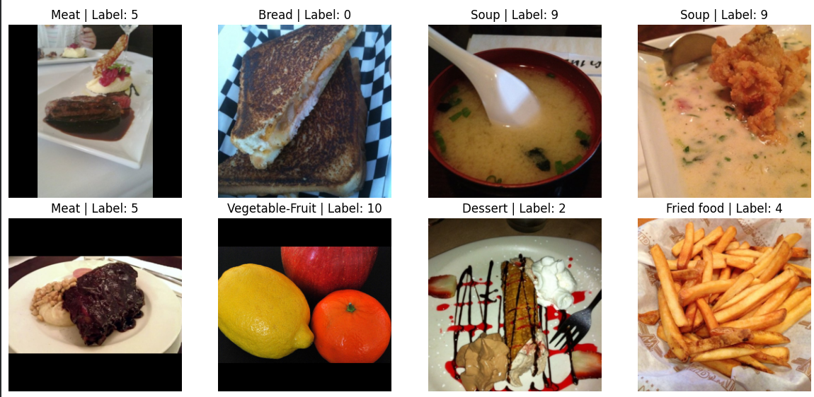
Methodology
Pipeline overview
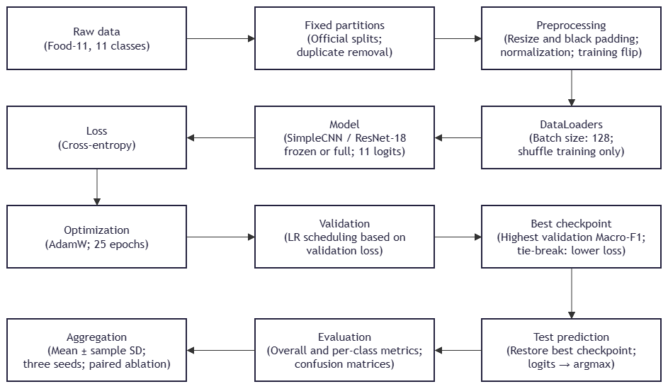
Baseline and main methods
| # | Model / Variant | Architecture | Input representation | Loss | Metrics | Strengths & limits | Params (Total / Trainable) | Library vs. Self-implemented |
|---|---|---|---|---|---|---|---|---|
| 1 | SimpleCNN Scratch baseline |
Four Conv(3x3,stride=1,padding=1)–BN–ReLU–MaxPool blocks with 16, 32, 64 and 128 output channels. Global average pooling → dropout (0.3) → linear head (128 → 11). |
B × 3 × 256 × 256 RGB, aspect-preserving resize, black padding and ImageNet normalization. |
nn.CrossEntropyLoss, unweighted. |
Primary: test Macro-F1. Secondary: accuracy, macro-precision, macro-recall, cross-entropy, per-class metrics and compute cost. |
Compact and fast at inference. Learns features from scratch and converges more slowly. | 99,339 Trainable: 99,339 |
Custom SimpleCNN built with torch.nn layers. |
| 2 | ResNet-18 (Frozen) |
ImageNet-1K V1 backbone. The backbone and its BatchNorm running statistics stay fixed. Global average pooling → dropout (0.3) → linear head (512 → 11). | B × 3 × 256 × 256 RGB, aspect-preserving resize, black padding and ImageNet normalization. |
nn.CrossEntropyLoss, unweighted. |
Primary: test Macro-F1. Secondary: accuracy, macro-precision, macro-recall, cross-entropy, per-class metrics and compute cost. |
Pretrained features give strong results with few trainable parameters. The full backbone still runs for each image. | 11,182,155 Trainable: 5,643 |
TorchVision ResNet-18 with a custom classification head and freeze policy. |
| 3 | ResNet-18 (Full Fine-Tuning) | Same pretrained backbone and classification head. Update both backbone and head, with a lower learning rate for the backbone. | B × 3 × 256 × 256 RGB, aspect-preserving resize, black padding and ImageNet normalization. |
nn.CrossEntropyLoss, unweighted. |
Primary: test Macro-F1. Secondary: accuracy, macro-precision, macro-recall, cross-entropy, per-class metrics and compute cost. |
Highest Macro-F1 in the comparison, with higher training time and a persistent train–validation gap. | 11,182,155 Trainable: 11,182,155 |
TorchVision ResNet-18 with a custom classification head and optimizer parameter groups. |
| Hyperparameter / Component | Specification / Value |
|---|---|
| Optimizer |
torch.optim.AdamW,
β₁ = 0.9, β₂ = 0.999, ε = 10−8,
and weight decay = 10−2
|
| Loss Function | Unweighted CrossEntropyLoss |
| Initial Learning Rate |
SimpleCNN: 10−3 for all parameters. ResNet-18 frozen: 10−3 for the classification head. ResNet-18 full: 10−4 for the backbone and 10−3 for the classification head. |
| Batching and Data Loading |
Batch size 128 for training, validation, and evaluation.
Training samples are shuffled; validation and evaluation samples
are not. Data loading uses num_workers=0.
|
| Training Duration | A fixed budget of 25 epochs for every configuration; no early stopping |
| Learning Rate Scheduler |
ReduceLROnPlateau, mode=min,
factor = 0.5, patience = 3, and minimum learning rate =
10−6 for each parameter group.
The default threshold is 10−4 with
threshold_mode=rel.
The scheduler is stepped on validation loss.
|
| Input and Normalization | RGB inputs of shape 3 × 256 × 256. Aspect-ratio-preserving bilinear resizing and centered black padding are applied. Pixel values are scaled to [0, 1] and normalized using ImageNet mean (0.485, 0.456, 0.406) and standard deviation (0.229, 0.224, 0.225). |
| Data Augmentation | Training only: random horizontal flipping with probability 0.5. No random augmentation is applied to validation or evaluation images. |
| Regularization |
SimpleCNN: Batch normalization in all four
convolutional blocks and dropout with probability 0.3 in the
classification head. ResNet-18: Backbone batch normalization and dropout with probability 0.3 in the new head. Frozen-backbone batch normalization remains in evaluation mode. |
| Weight Initialization |
SimpleCNN: Trained from scratch. ResNet-18: ImageNet-1K pretrained backbone ( IMAGENET1K_V1) with a newly initialized
11-class classification head.
|
| Checkpoint Criterion | Highest validation Macro-F1-score. Equal scores are resolved using lower validation loss. The selected checkpoint is restored before final evaluation. |
| Seeds | Training seeds 42, 43, and 44 for each configuration. The cleaned Food-11 partitions are derived from the official splits and held fixed across all runs. |
| Hardware & Environment | NVIDIA Tesla T4 GPU, Google Colab, Linux, Python 3.13.16, PyTorch 2.11.0 - 2.14.1+cu130, TorchVision 0.26.0 - 0.29.1+cu130, CUDA 13.0, NumPy 2.4.6, pandas 2.2.3, and scikit-learn 1.6.1 |
| Numerical Precision |
FP32 (torch.float32);
no mixed-precision training is used
|
| Reported Training Time | Sum of the per-epoch training and validation timings. Includes batch loading, preprocessing, training augmentation, device transfer, forward and backward passes, optimizer updates, and metric computation. Excludes dataset preparation, model initialization, checkpoint and CSV writes, printed logging, scheduler updates, and final test evaluation. |
| Hyperparameter Configuration | Hyperparameters were selected manually and held fixed across training seeds for each configuration. |
Table 11 · Training and Optimization Hyperparameters for SimpleCNN and ResNet-18.
2. Experimental design & controlled comparisons
The design compares the three model configurations and tests horizontal flipping as a separate ablation.
| # | Comparison Study | Reference vs. Alternative | Predeclared Hypothesis | Changed Factor(s) | Fixed Factors | Metrics & Decision Criterion |
|---|---|---|---|---|---|---|
| 1 | Model configuration | SimpleCNN vs. ResNet-18 frozen vs. ResNet-18 full | The pretrained configurations outperform the scratch baseline. Full fine-tuning improves over a frozen backbone. | SimpleCNN and ResNet-18 differ in architecture, initialization, and parameter count. Full fine-tuning updates the backbone weights and BatchNorm statistics and uses a separate backbone learning rate. | Same cleaned splits, preprocessing, flip policy, batch size, optimizer, weight decay, training budget, scheduler, and checkpoint rule. Both ResNet-18 variants share the same architecture and initial weights for each matched seed. |
Metrics: Test Macro-F1 is the primary metric,
supported by secondary predictive metrics, computational costs,
and training and validation curves. Conclusion criteria: Compare mean test Macro-F1, variability across seeds, and computational cost. The SimpleCNN–ResNet comparison evaluates complete configurations and cannot attribute performance differences solely to pretraining, because architecture and capacity also differ. |
| 2 | Horizontal-flip ablation | With flip (p = 0.5) vs. no flip (p = 0) for each model |
Training-time horizontal flipping improves test Macro-F1. | Horizontal flipping during training. | Model, partitions, other training settings and matched seeds. |
Metrics: For each configuration and training seed,
compute the paired test Macro-F1 difference as
augmentation minus no augmentation. Report mean ± sample standard
deviation across seeds 42, 43, and 44. Conclusion criteria: A positive mean difference favors horizontal-flip augmentation, whereas a negative mean difference favors training without augmentation. The standard deviation describes variability across seeds. A mean difference that is small compared with its standard deviation is interpreted cautiously as inconclusive evidence of improvement. |
Results
The three models use the same 2,770 cleaned Food-11 test images. Results are mean ± sample standard deviation across training seeds 42, 43 and 44. Each run completes 25 epochs and restores the checkpoint with the highest validation Macro-F1, with lower validation cross-entropy breaking ties.
Validation uses unaugmented images and the weights at the end of each epoch. In each per-class table, bold and underlined values mark the highest and lowest means in each column. In the confusion matrices, rows are true classes and columns are predicted classes. The row-normalized diagonal gives class recall. Prediction examples use each model’s selected checkpoint for seed 42. Difficult-but-correct examples have small gaps between their two highest softmax scores.
Training Behaviors
SimpleCNN
Training and validation performance remain relatively low and track each other closely. This pattern suggests incomplete fitting within the 25-epoch budget. Training loss is still improving late in training, and two seeds select the final epoch. The runs leave open how much of the remaining limitation comes from model capacity, optimization, or training duration. The selected checkpoints are at epochs 22, 25, and 25 for seeds 42, 43, and 44, respectively.
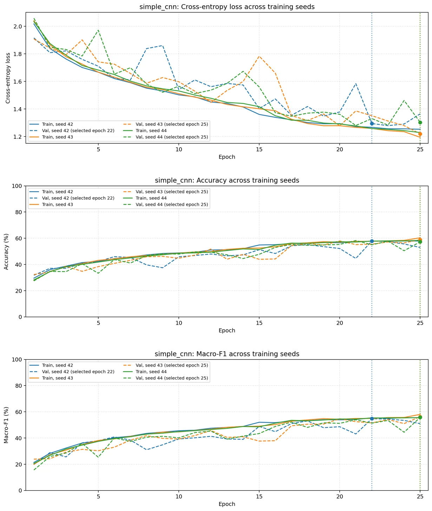
ResNet-18 frozen
Validation performance is broadly stable in the later epochs, suggesting limited additional gains from head-only training under the current protocol. The selected epochs for seeds 42, 43 and 44 are 22, 25 and 22, respectively.
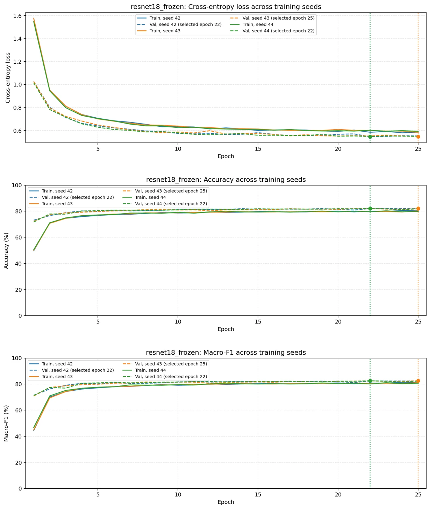
ResNet-18 full fine-tuning
After its early minimum, validation loss broadly plateaus or rises while training loss continues to fall. This persistent gap is consistent with overfitting later in training, despite strong validation performance. The selected epochs for seeds 42, 43 and 44 are 14, 19 and 17, respectively.
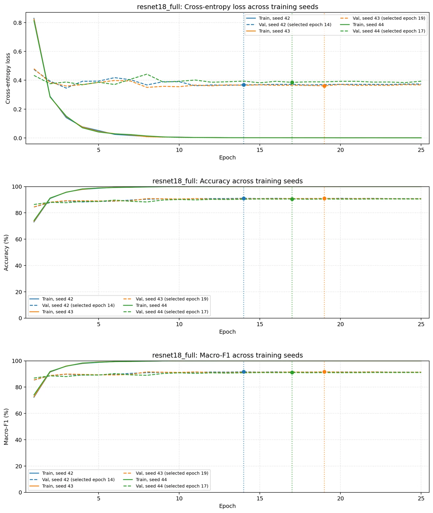
Quantitative Results
| Model | Total params | Trainable params | Test Acc (%) | Macro-Prec (%) | Macro-Rec (%) | Macro-F1 (%) | Test CE loss | Inference (ms/sample) | Train time / run (s) |
|---|---|---|---|---|---|---|---|---|---|
| SimpleCNN | 99,339 | 99,339 | 60.40 ± 1.02 | 63.48 ± 2.25 | 57.23 ± 0.51 | 57.58 ± 0.84 | 1.2060 ± 0.0273 | 0.8054 ± 0.1036 | 2,969.5 ± 112.3 |
| ResNet-18 (frozen) | 11,182,155 | 5,643 | 84.62 ± 0.24 | 85.45 ± 0.10 | 85.23 ± 0.19 | 85.26 ± 0.17 | 0.4938 ± 0.0036 | 2.6574 ± 0.4641 | 2,970.3 ± 97.2 |
| ResNet-18 (full) | 11,182,155 | 11,182,155 | 91.37 ± 0.43 | 91.65 ± 0.37 | 91.74 ± 0.40 | 91.67 ± 0.39 | 0.3197 ± 0.0148 | 2.4819 ± 0.1453 | 3,619.5 ± 72.1 |
Table 13 · Predictive performance and computational cost on Food-11, reported as mean ± sample standard deviation across seeds 42, 43, and 44. Macro-F1 is the primary metric. Bold values indicate the best mean predictive performance.
| Model | Executed epochs | Train time / epoch (s) |
|---|---|---|
| SimpleCNN | 25 | 118.78 ± 4.49 |
| ResNet-18 (frozen) | 25 | 118.81 ± 3.89 |
| ResNet-18 (full) | 25 | 144.78 ± 2.89 |
Per-class results and confusion matrices
SimpleCNN
Per-class metrics and test confusion matrices.
| Class | One-vs-rest Acc (%) | Precision (%) | Recall (%) | F1 (%) |
|---|---|---|---|---|
| Bread | 89.64 ± 2.19 | 48.92 ± 8.70 | 47.51 ± 11.44 | 46.87 ± 4.00 |
| Dairy product | 95.38 ± 0.07 | 76.47 ± 3.09 | 18.82 ± 2.75 | 30.10 ± 3.44 |
| Dessert | 83.25 ± 1.52 | 48.39 ± 3.52 | 66.67 ± 6.43 | 55.83 ± 0.99 |
| Egg | 90.29 ± 0.58 | 61.41 ± 4.42 | 50.46 ± 3.70 | 55.22 ± 1.43 |
| Fried food | 92.07 ± 1.39 | 51.22 ± 6.90 | 64.71 ± 5.56 | 56.74 ± 2.42 |
| Meat | 92.77 ± 0.33 | 74.98 ± 8.61 | 59.61 ± 15.22 | 64.87 ± 7.50 |
| Noodles/Pasta | 95.85 ± 0.85 | 62.09 ± 9.56 | 61.68 ± 3.49 | 61.44 ± 3.66 |
| Rice | 96.57 ± 0.66 | 50.42 ± 15.44 | 39.63 ± 6.70 | 43.00 ± 2.99 |
| Seafood | 94.33 ± 0.32 | 65.91 ± 10.97 | 54.52 ± 14.53 | 57.81 ± 5.87 |
| Soup | 92.80 ± 1.58 | 75.20 ± 9.87 | 74.57 ± 5.36 | 74.37 ± 2.88 |
| Vegetable/Fruit | 97.85 ± 0.30 | 83.26 ± 3.21 | 91.36 ± 0.45 | 87.10 ± 1.55 |
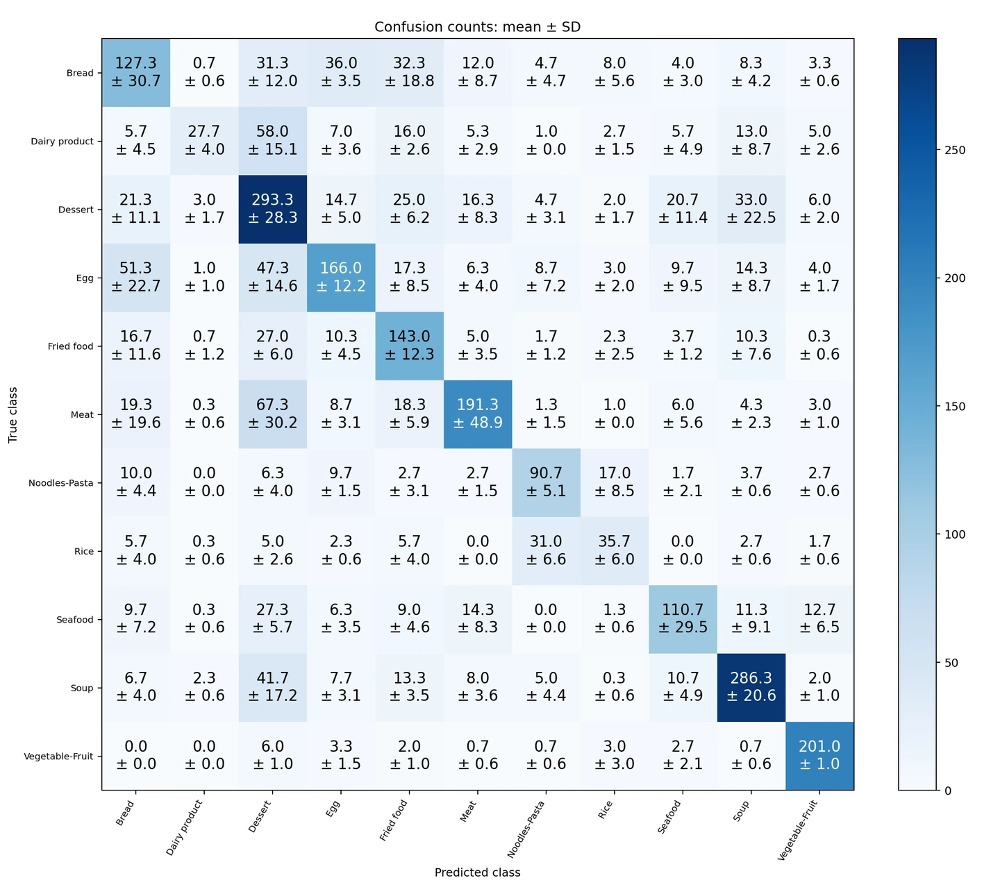
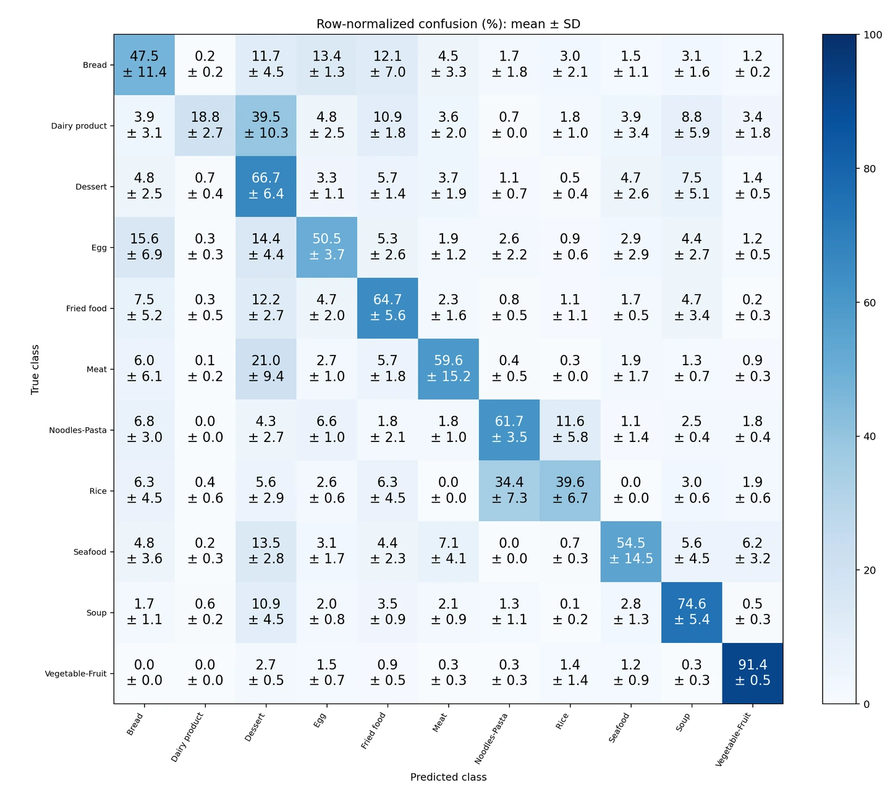
ResNet-18 (frozen)
Per-class metrics and test confusion matrices.
| Class | One-vs-rest Acc (%) | Precision (%) | Recall (%) | F1 (%) |
|---|---|---|---|---|
| Bread | 95.28 ± 0.15 | 75.66 ± 2.39 | 75.75 ± 2.45 | 75.65 ± 0.24 |
| Dairy product | 97.57 ± 0.09 | 81.64 ± 2.73 | 70.07 ± 1.80 | 75.37 ± 0.41 |
| Dessert | 93.39 ± 0.06 | 80.12 ± 0.93 | 77.73 ± 2.02 | 78.89 ± 0.58 |
| Egg | 95.09 ± 0.10 | 79.90 ± 1.12 | 78.42 ± 2.19 | 79.13 ± 0.70 |
| Fried food | 97.20 ± 0.15 | 82.07 ± 2.25 | 83.11 ± 2.23 | 82.55 ± 0.75 |
| Meat | 96.79 ± 0.23 | 83.56 ± 1.90 | 90.03 ± 0.62 | 86.66 ± 0.74 |
| Noodles/Pasta | 99.70 ± 0.02 | 96.64 ± 0.01 | 97.73 ± 0.39 | 97.18 ± 0.20 |
| Rice | 99.49 ± 0.04 | 90.43 ± 0.92 | 94.44 ± 1.11 | 92.39 ± 0.55 |
| Seafood | 97.45 ± 0.13 | 82.41 ± 1.77 | 82.92 ± 0.57 | 82.66 ± 0.63 |
| Soup | 98.33 ± 0.08 | 92.90 ± 0.82 | 95.23 ± 0.66 | 94.04 ± 0.28 |
| Vegetable/Fruit | 98.95 ± 0.06 | 94.59 ± 1.47 | 92.12 ± 1.84 | 93.32 ± 0.45 |
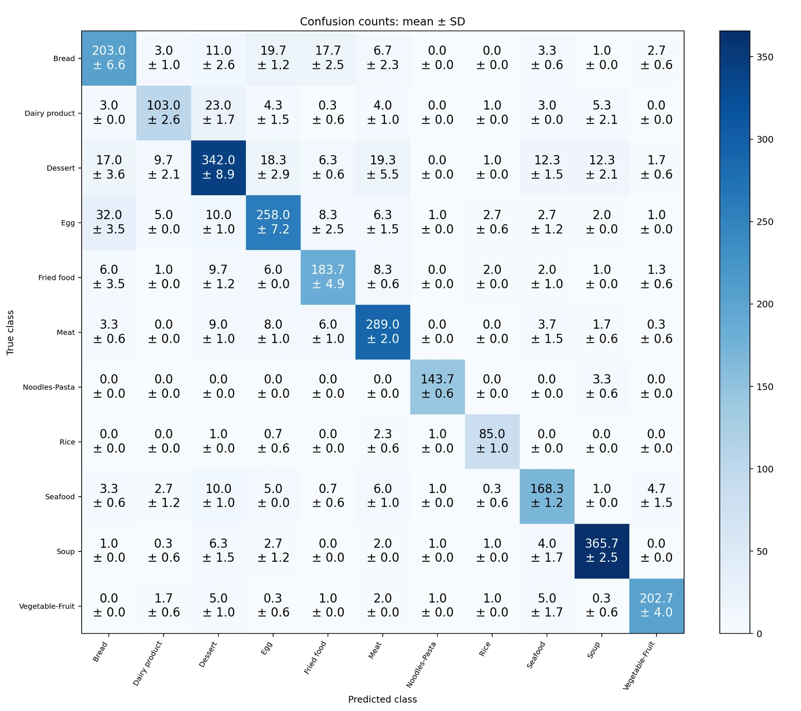
ResNet-18 (full fine-tuning)
Per-class metrics and test confusion matrices.
| Class | One-vs-rest Acc (%) | Precision (%) | Recall (%) | F1 (%) |
|---|---|---|---|---|
| Bread | 97.36 ± 0.23 | 87.37 ± 1.13 | 85.07 ± 2.33 | 86.19 ± 1.30 |
| Dairy product | 98.30 ± 0.07 | 86.59 ± 0.36 | 80.50 ± 1.42 | 83.43 ± 0.83 |
| Dessert | 96.04 ± 0.12 | 87.51 ± 0.69 | 87.58 ± 0.47 | 87.54 ± 0.33 |
| Egg | 97.91 ± 0.25 | 91.14 ± 2.11 | 91.29 ± 0.46 | 91.20 ± 0.96 |
| Fried food | 98.23 ± 0.07 | 88.63 ± 0.66 | 89.29 ± 1.71 | 88.95 ± 0.58 |
| Meat | 97.79 ± 0.24 | 89.47 ± 1.29 | 91.69 ± 0.72 | 90.57 ± 0.99 |
| Noodles/Pasta | 99.89 ± 0.04 | 99.10 ± 0.78 | 98.87 ± 0.39 | 98.98 ± 0.34 |
| Rice | 99.72 ± 0.02 | 93.03 ± 0.56 | 98.89 ± 0.00 | 95.87 ± 0.30 |
| Seafood | 98.68 ± 0.08 | 90.71 ± 0.73 | 91.30 ± 1.14 | 91.00 ± 0.54 |
| Soup | 99.23 ± 0.08 | 97.30 ± 0.15 | 97.14 ± 0.52 | 97.22 ± 0.28 |
| Vegetable/Fruit | 99.59 ± 0.06 | 97.28 ± 0.45 | 97.58 ± 0.26 | 97.43 ± 0.34 |
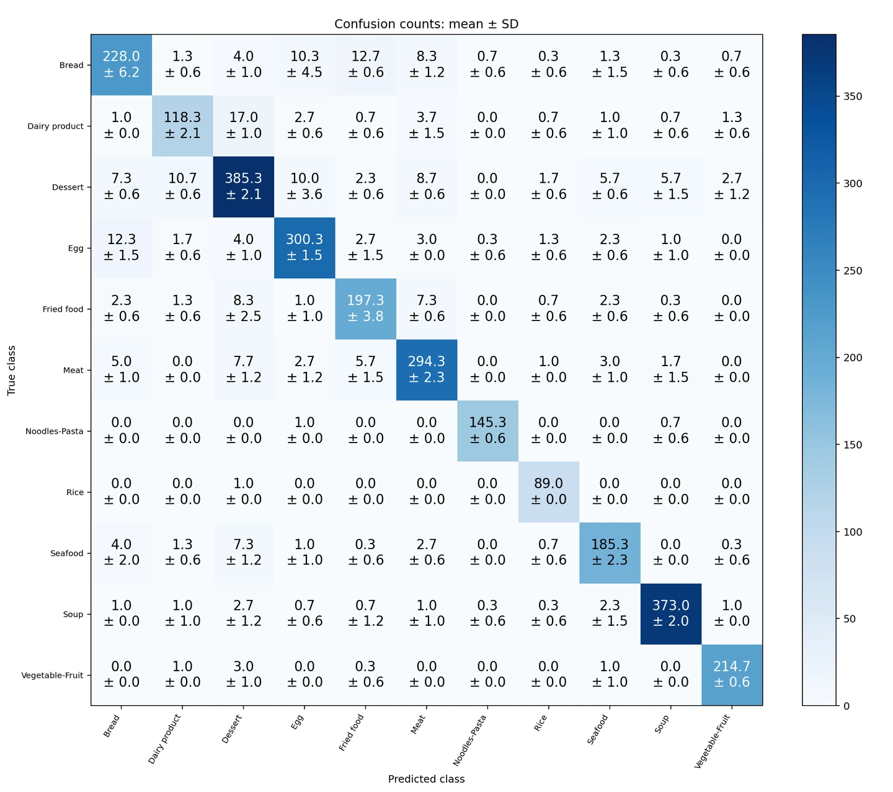
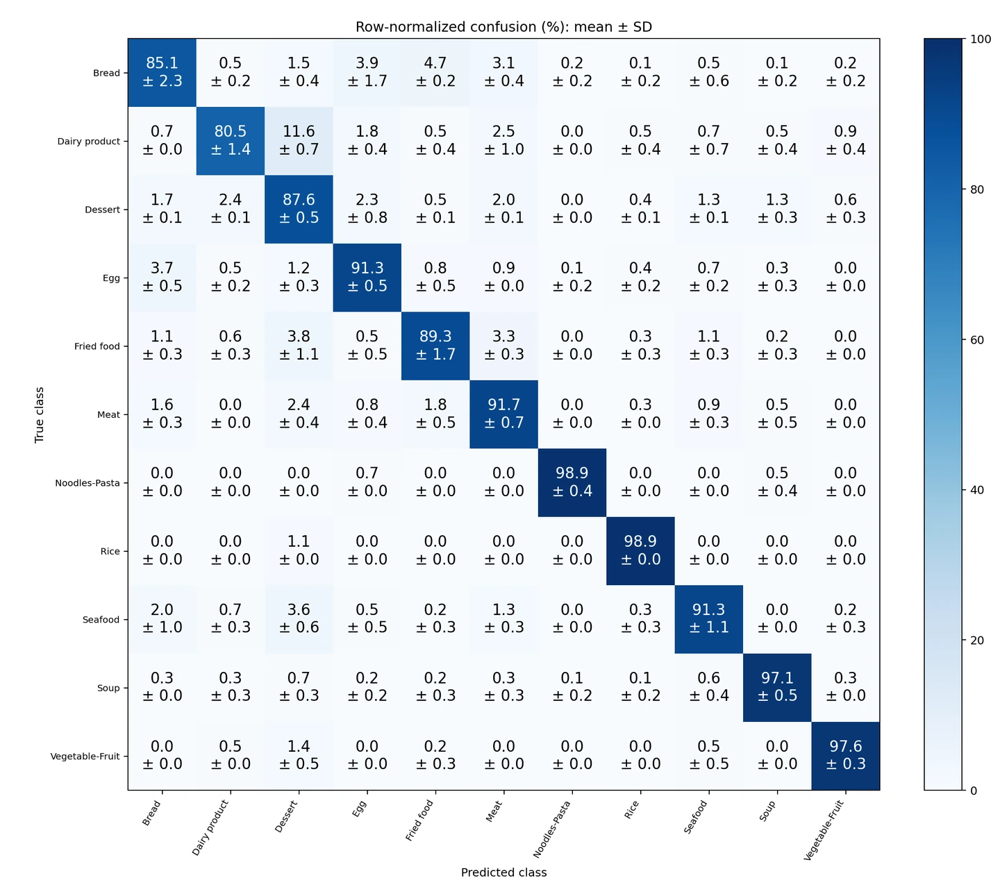
Dairy product has the lowest mean recall and F1-score across all three configurations, while Vegetable/Fruit is comparatively well recognized. Both ResNet-18 configurations perform strongly on Noodles/Pasta and Soup. Full fine-tuning improves mean F1 for every class relative to the frozen backbone, although Dairy product and Bread remain comparatively difficult.
One-vs-rest accuracy includes true negatives and can remain high even when a class has low recall. For example, SimpleCNN achieves 95.38% one-vs-rest accuracy for Dairy product but only 18.82% recall. Precision, recall, F1-score, and directional confusion rates should therefore be considered together when assessing class-specific performance.
4. Qualitative results
These examples come from the Food-11 test set and use each model’s validation-selected checkpoint for training seed 42. Examples were selected separately for each model. Difficult-but-correct examples have small gaps between their two highest softmax scores. Select any figure to open the full-size image.
SimpleCNN Correct, difficult-but-correct, and incorrect predictions (seed 42)
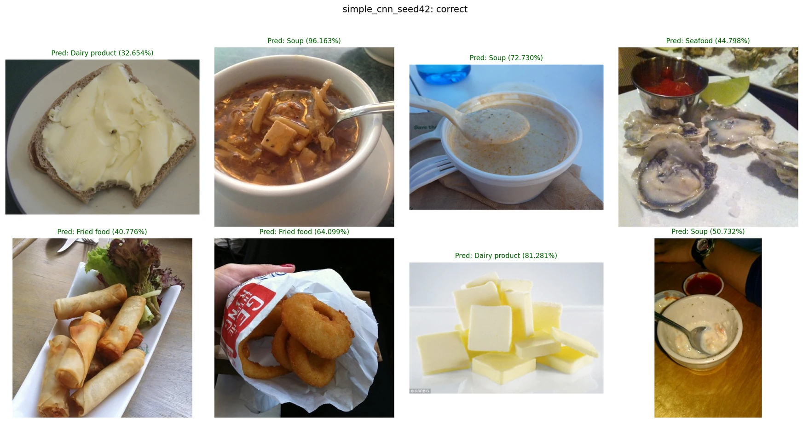
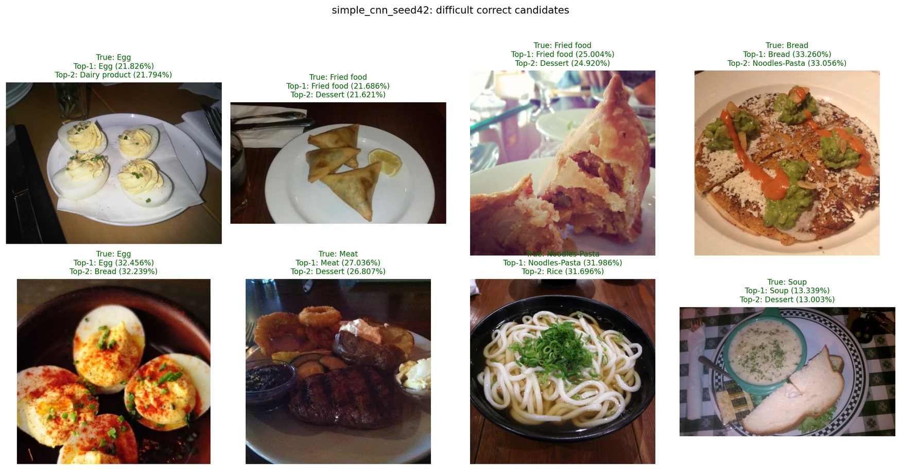
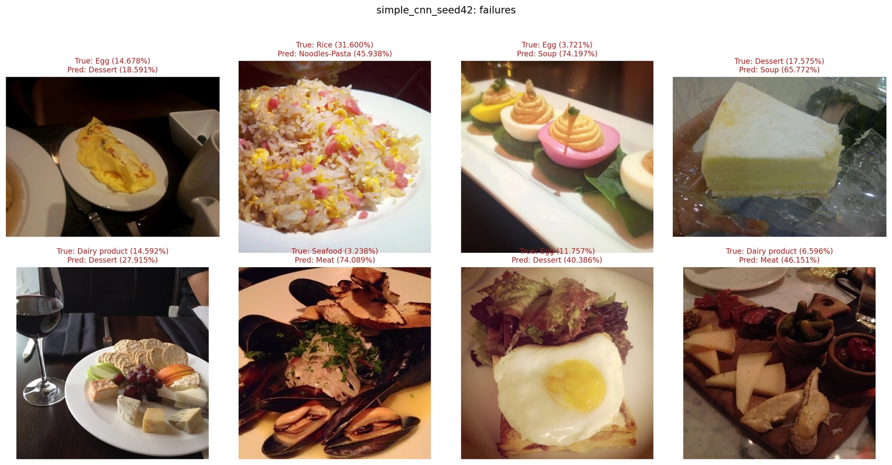
ResNet-18 (frozen) Correct, difficult-but-correct, and incorrect predictions (seed 42)
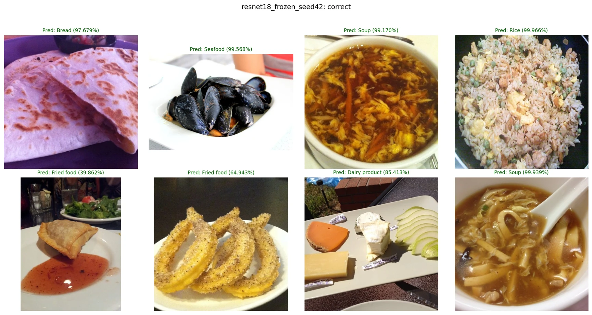
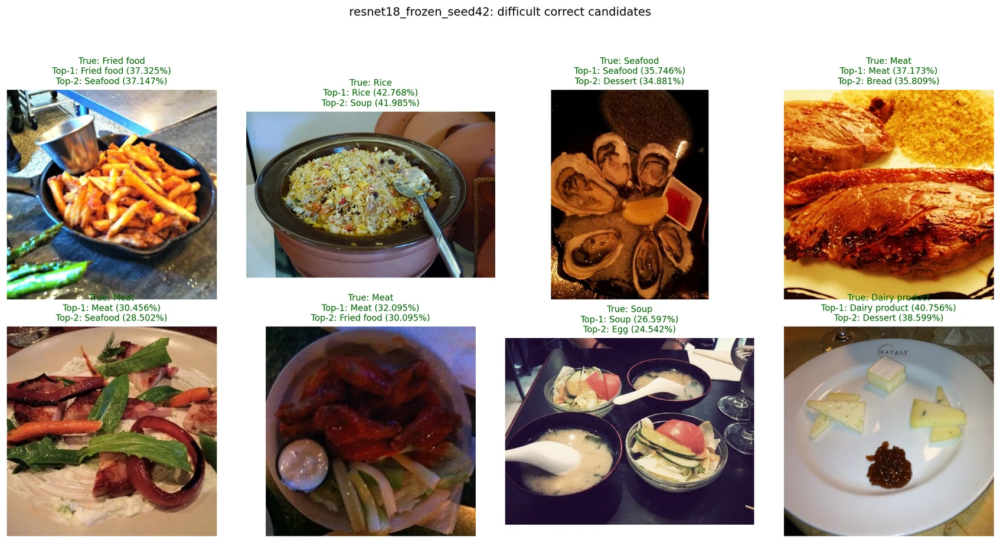
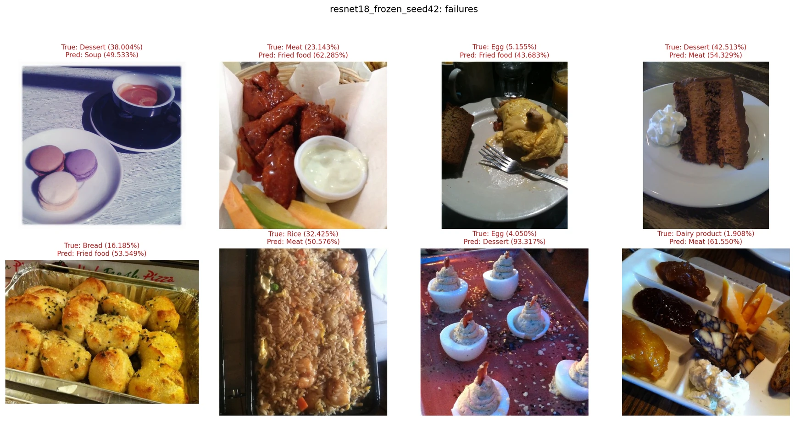
ResNet-18 (full fine-tuning) Correct, difficult-but-correct, and incorrect predictions (seed 42)
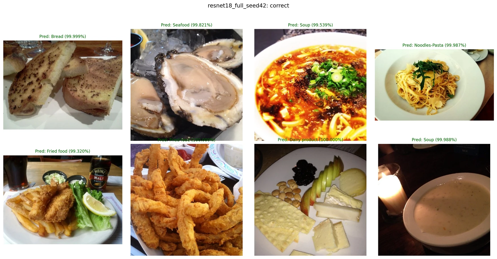
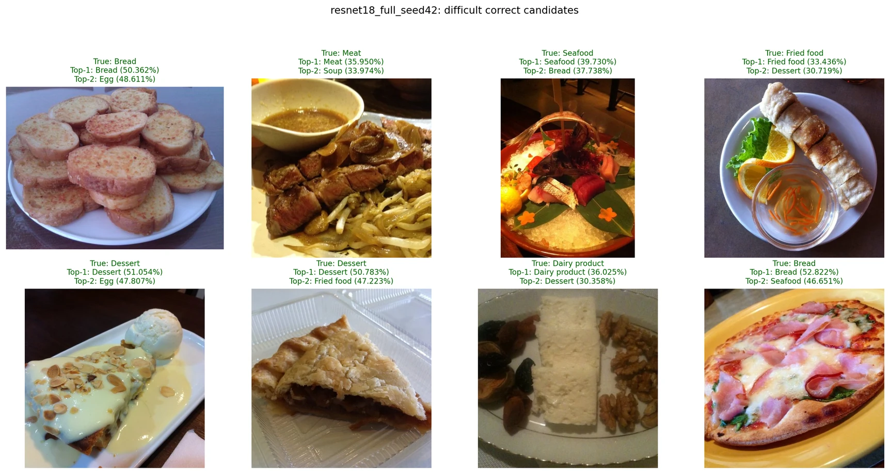
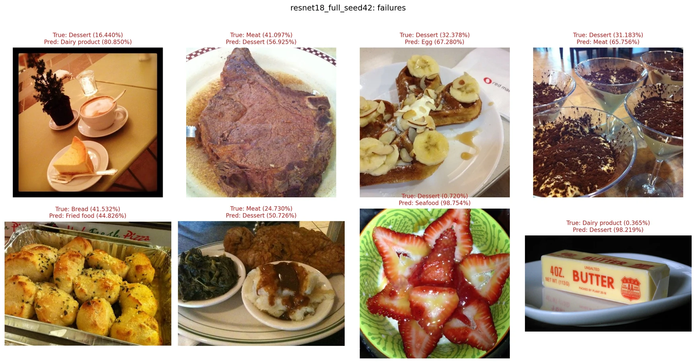
Comparison and discussion
Overall predictive performance
Fully fine-tuned ResNet-18 achieved the highest mean test Macro-F1 at 91.67%, followed by frozen ResNet-18 at 85.26% and SimpleCNN at 57.58%. Top-1 accuracy followed the same ordering at 91.37%, 84.62%, and 60.40%, respectively. The model ranking therefore holds when weighting each test image equally for accuracy and each food class equally for Macro-F1.
Class-specific improvements and remaining errors
Rice showed the largest F1 improvement from SimpleCNN to frozen ResNet-18, rising from 43.00% to 92.39%. Egg showed the largest further improvement with full fine-tuning, rising from 79.13% to 91.20%. Dairy product remained the lowest-recall class at 80.50% for the fully fine-tuned model. The packaged-butter example in Figure 26 illustrates its recurring confusion with Dessert.
Architecture and input representation
All three models used the same 3 × 256 × 256 RGB inputs after aspect-ratio-preserving resizing, black padding, and ImageNet normalization. SimpleCNN learned its features from scratch. For each matched seed, both ResNet-18 variants started from the same ImageNet-pretrained backbone weights and the same initial classification head. The frozen model’s performance shows that the pretrained features already transfer to Food-11, and full fine-tuning yielded a further gain under the evaluated training settings.
Training behavior, loss, and prediction confidence
SimpleCNN continued to improve near the end of the 25-epoch budget, while frozen ResNet-18 largely plateaued. Full fine-tuning reached nearly perfect training accuracy and showed a persistent gap between training and validation accuracy. It also achieved the lowest mean test cross-entropy at 0.3197, compared with 0.4938 for frozen ResNet-18 and 1.2060 for SimpleCNN.
The fully fine-tuned model assigned a softmax score of 98.219% to Dessert for an image labeled Dairy product. A calibration analysis would measure how closely these scores correspond to observed accuracy across the test set.
Computational trade-offs
SimpleCNN was the smallest model and had the fastest measured inference at 0.81 ms per image. Frozen ResNet-18 trained only 5,643 parameters. Both ResNet-18 variants ran the full backbone during inference, averaging 2.66 ms per image for the frozen model and 2.48 ms per image for the fully fine-tuned model. Full fine-tuning took about 60.3 minutes per run including validation, compared with 49.5 minutes for frozen ResNet-18.
Hypothesis assessment and scope
Both pretrained ResNet-18 configurations outperformed SimpleCNN on the evaluated Food-11 split, supporting the study hypothesis. The comparison with SimpleCNN combines differences in architecture, capacity, initialization, and training policy. The comparison within ResNet-18 holds the architecture and initial weights fixed for each matched seed, supporting full fine-tuning under the tested settings. The results cover three training seeds on the same cleaned data partitions.
Error analysis
Fully fine-tuned ResNet-18 misclassified 242 of 2,770 Food-11 test images (8.74%) at seed 42. Each error was assigned to the first matching group from G1 to G5 based on its true and predicted labels.
Group percentages are calculated over all 242 errors. Table 18 through Table 22 show the main confusion pairs for G1–G5. Each figure contains four selected examples and opens at full size when selected.
G1 · Dairy and Dessert overlap 28 errors · 11.6%
| Error group | Errors | Main pairs (true → predicted) | Hypothesized cause | Improvement idea |
|---|---|---|---|---|
| G1 · Dairy and Dessert overlap | 28 (11.6%) | Dairy product → Dessert (17) Dessert → Dairy product (11) |
Shared ingredients, creamy textures, and similar presentation may make dairy dishes resemble desserts. | Review labels for mixed dairy dishes and add examples of dairy products and similar-looking desserts in varied settings. |
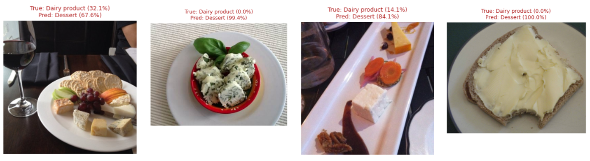
G2 · Bread in mixed dishes 71 errors · 29.3%
| Error group | Errors | Main pairs (true → predicted) | Hypothesized cause | Improvement idea |
|---|---|---|---|---|
| G2 · Bread in mixed dishes | 71 (29.3%) | Bread → Fried food (13) Egg → Bread (12) Bread → Egg (10) Bread → Meat (9) Dessert → Bread (7) |
Bread, fillings, and sides can provide competing cues in an image with a single label. | Review how the main food is selected and compare full images with crops of the main dish. |
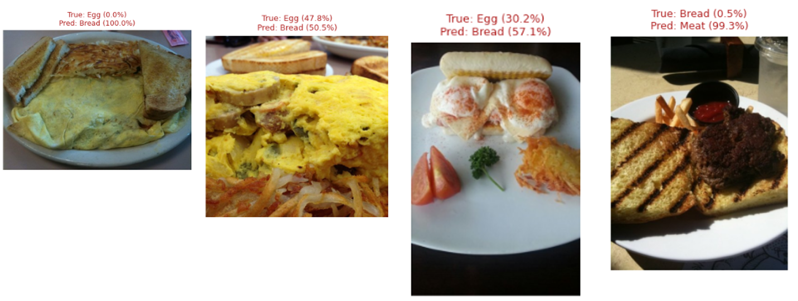
G3 · Other classes predicted as Dessert 37 errors · 15.3%
| Error group | Errors | Main pairs (true → predicted) | Hypothesized cause | Improvement idea |
|---|---|---|---|---|
| G3 · Other classes predicted as Dessert | 37 (15.3%) | Fried food → Dessert (11) Meat → Dessert (9) Seafood → Dessert (6) |
Sweet fried foods can fit both Fried food and Dessert. Similar colors, glossy surfaces, and plating may make other foods resemble desserts. | Review labels for sweet fried foods, add visually similar examples from competing classes, and test crops of the main dish. |
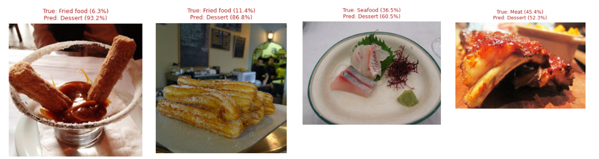
G4 · Dessert predicted as other classes 35 errors · 14.5%
| Error group | Errors | Main pairs (true → predicted) | Hypothesized cause | Improvement idea |
|---|---|---|---|---|
| G4 · Dessert predicted as other classes | 35 (14.5%) | Dessert → Egg (9) Dessert → Meat (9) Dessert → Soup (6) Dessert → Seafood (5) |
Dessert images can share colors, textures, sauces, or ingredients with other classes. Ambiguous annotations may contribute to some errors. | Audit ambiguous labels and add dessert examples that visually resemble other classes. |
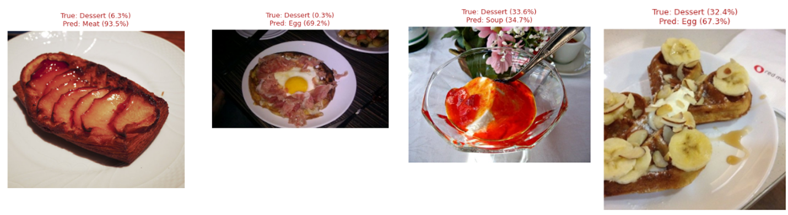
G5 · Ingredient and preparation overlap 35 errors · 14.5%
| Error group | Errors | Main pairs (true → predicted) | Hypothesized cause | Improvement idea |
|---|---|---|---|---|
| G5 · Ingredient and preparation overlap | 35 (14.5%) | Fried food → Meat (7) Meat → Fried food (4) Meat → Egg (4) |
A fried coating can hide the main ingredient. Mixed dishes can contain cues associated with several classes. | Review which label takes priority when ingredient and preparation both apply. Add consistently labeled examples of coated foods and mixed dishes. |
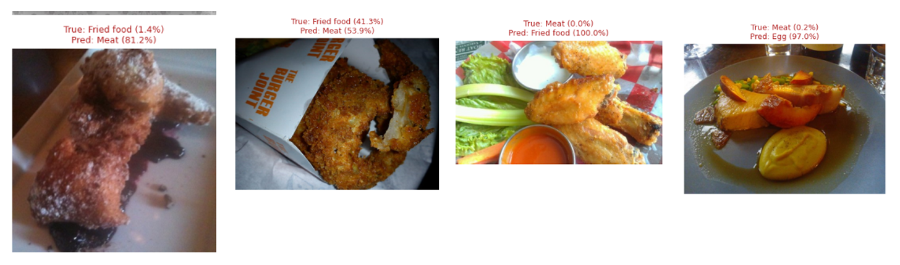
Other pairs. The remaining 36 errors (14.9%) span several class pairs.
Errors with high softmax scores
In Figure 27, the model predicts Dessert for a Dairy product image with a softmax score of 99.4%. In Figure 31, it predicts Fried food for a Meat image with a score that rounds to 100.0%. The report proposes fitting temperature scaling on validation data and evaluating calibration on the test set.
Ablation study: Horizontal flipping
We compare training with horizontal flipping (p = 0.5) and without it (p = 0). For each model, runs are paired by seed and use the same cleaned Food-11 splits. Test Macro-F1 is the primary metric.
Table 23 · Test performance without horizontal flipping
Values are mean ± sample standard deviation across seeds 42, 43, and 44. Bold values mark the best mean for each metric.
| Model | Top-1 Accuracy (%) | Macro-Precision (%) | Macro-Recall (%) | Macro-F1 (%) | Test CE Loss |
|---|---|---|---|---|---|
| SimpleCNN | 60.01 ± 1.47 | 62.41 ± 0.91 | 56.79 ± 1.43 | 57.09 ± 1.81 | 1.2211 ± 0.0196 |
| ResNet-18 (frozen) | 84.33 ± 0.06 | 85.50 ± 0.04 | 84.52 ± 0.11 | 84.85 ± 0.11 | 0.4988 ± 0.0022 |
| ResNet-18 (full fine-tuning) | 90.76 ± 0.07 | 91.12 ± 0.14 | 91.18 ± 0.04 | 91.12 ± 0.05 | 0.3423 ± 0.0087 |
Table 24 · Paired changes from adding horizontal flipping
For each seed, we subtract the result without flipping from the result with flipping. The table reports mean ± sample standard deviation across the three paired seeds. A negative change in cross-entropy means lower loss with flipping.
| Model | Δ Top-1 Accuracy (%) | Δ Macro-Precision (%) | Δ Macro-Recall (%) | Δ Macro-F1 (%) | Δ Test CE Loss |
|---|---|---|---|---|---|
| SimpleCNN | +0.39 ± 0.50 | +1.07 ± 2.38 | +0.44 ± 1.12 | +0.49 ± 1.30 | −0.0151 ± 0.0156 |
| ResNet-18 (frozen) | +0.29 ± 0.19 | −0.05 ± 0.06 | +0.71 ± 0.22 | +0.41 ± 0.16 | −0.0051 ± 0.0019 |
| ResNet-18 (full fine-tuning) | +0.61 ± 0.38 | +0.53 ± 0.41 | +0.56 ± 0.42 | +0.55 ± 0.42 | −0.0227 ± 0.0106 |
Horizontal flipping improved test Macro-F1 at all three seeds for both ResNet-18 configurations. The mean changes were +0.41% for the frozen backbone and +0.55% for full fine-tuning. For the frozen model, mean Macro-Recall changed by +0.71% and mean Macro-Precision by −0.05%. SimpleCNN’s Macro-F1 change varied in direction across seeds (+0.49 ± 1.30%), so the effect was inconclusive.
Limitations
Data limitations
Class imbalance. The largest classes in the original training split contain about 5.36 times as many images as Rice. Macro-F1 gives each class equal weight, while per-class scores for smaller classes are more sensitive to individual errors. The test set contains 90 Rice images and 440 Dessert images.
Broad and overlapping categories. Dishes from different classes can share colors, textures, and preparation styles. Food-11 assigns one label per image, so mixed dishes can make some errors difficult to interpret.
Annotation ambiguity. Some images contain off-topic content, such as a shop sign labeled Dessert. These examples suggest possible label noise, whose frequency across the dataset was not measured.
Photo-style bias. Some Dairy product and Vegetable/Fruit images have studio backgrounds. Models may use these background cues alongside the appearance of the food.
Duplicates and grouping metadata. Duplicate removal reduces overlap within and across the predefined splits. All three seeds use the same cleaned split, so they measure variation across training runs on that split. The dataset lacks subject, restaurant, plate, and scene identifiers for grouped splitting.
Method limitations
The comparison between SimpleCNN and pretrained ResNet-18 combines differences in architecture, parameter count, and initialization. The two ResNet-18 variants were compared under the selected learning rates and a fixed budget of 25 epochs. SimpleCNN’s training loss was still decreasing near epoch 25, so a longer run could change its results. The horizontal-flip ablation used three matched seeds, which limits how precisely the small gains can be estimated.
Generalization and future work
Evaluation on an independent food-image dataset would test whether the model ranking holds across image sources, cuisines, and presentation styles. Comparing randomly initialized and ImageNet-pretrained ResNet-18 under the same training settings would help isolate the effect of pretraining. Longer SimpleCNN runs with validation-based checkpoint selection would clarify the effect of the training budget. Reviewing Dairy product images predicted as Dessert would help identify which errors involve ambiguous labels or scenes.
Conclusion
Both pretrained ResNet-18 variants outperformed SimpleCNN on the evaluated Food-11 split, supporting the first hypothesis. Mean test Macro-F1 was 57.58% for SimpleCNN, 85.26% for frozen ResNet-18, and 91.67% for fully fine-tuned ResNet-18. The improvement from the frozen to the fully fine-tuned model supports updating the backbone under the tested training policy.
Horizontal flipping improved test Macro-F1 at all three seeds for both ResNet-18 variants, supporting the second hypothesis for those models. The mean paired changes were +0.41% for frozen ResNet-18 and +0.55% for full fine-tuning. The effect on SimpleCNN was inconclusive because its changes varied in direction across seeds. Fully fine-tuned ResNet-18 with horizontal flipping achieved the highest mean test Macro-F1 among the evaluated configurations.
04 — AI usage Disclosure
In accordance with the course's AI-use disclosure requirements, AI assistance during implementation, analysis, report writing, and website development is documented in AI_USAGE.md. The records describe the tools used, tasks, AI contributions, student verification, and responsible members.
The group takes full responsibility for all submitted code, numerical results, figures, claims, and text. AI tools supported learning, code and draft refinement, website development, formatting, and language editing. All reported experimental metrics were obtained from runs executed by the group, and result figures were produced from those outputs. Group members reviewed the adopted suggestions and checked them against the implementation, experimental evidence, and assignment requirements.
Links
| Content | Link |
|---|---|
| Assignment 2 Repository | GitHub repository |
| Assignment 2 Report | Report |
| Assignment 2 Jupyter Notebook | Jupyter Notebook |
| Assignment 2 Presentation Slides | Presentation Slides |
| Assignment 2 Main Checkpoints | Main Checkpoints |
| Assignment 2 Ablation Study Checkpoints | Ablation Study Checkpoints |
| Assignment 2 Reconstruction Instructions | Reconstruction Instructions |
| Assignment 2 YouTube presentation video | YouTube presentation video |